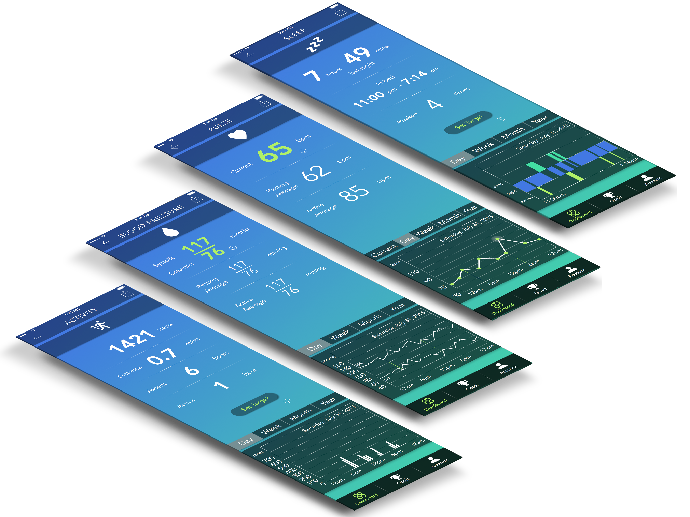

Pulseband
Pulseband is a concept wearable device that measures a user's heart rate, blood pressure, steps and sleep activity, among other vitals. The device is specifically designed for people with heart conditions as well as those at risk of developing related conditions.
As part of an exploratory project at DESIGNATION Labs, my team was tasked with creating a companion mobile app for the Pulseband.
Role
UX, Ixd, Branding, UI
Process
User Interviews, Personas, Competitive Analysis, Scenarios, App Map, Wireframes, Hi-Fidelity Mockups, Prototype
Goal
To create a mobile app for the Pulseband that serves those with heart health needs.

UX
Using agile methodology, my team and I planned our research and product requiremments. We split our time into 3 sprints, 2 of which followed the Google 5 day sprint process.
Interview Insights
We conducted interviews with health care professionals and potenial users to gain an understanding of their pain points
• Any increase in activity helps with heart health, incentivising users will help with compliance
• Vital monitoring needs to be glanceable, threatening and non-threatening situations need to be actionable
• Only essential features to prevent overwhelming the user
Personas
After analyzing our reasearch, we created 3 personas to represent the goals, motivations, and frustrations of our target users.

IxD
Our research helped us refine our vision. We were then able to start sketching our ideas. Scenarios, App Maps, and Wireframes were made.
Scenarios
Our team's scenarios were based on our personas. This helped us map out the needs of the user.
App Map
We created multiple app maps, making sure we didn't make too deep and complex of an app.
Wireframes
Wireframes were for made the primary screens.
Branding
The visual design took into account the user demographic as well as the function of the app.
With many older users and dense vital data, the app needed to be accessable.
Fonts & Colors
The font we used for the app was Avenir. We settled on this because of its energy and readability.
Based on color theory, we chose blues and greens that are often associated with calmness, healing, growth, and trust.
Logo
Our logo was created by one of my team members.
UI
In the end we had two different directions. One UI created by myself and the other by another member of my group. We tested the two designs on usability hub and with potenial users. Ultimately the group decided to go with my design.
Hi Fidelity Mockups
Below are some of the mockups of my design direction.

